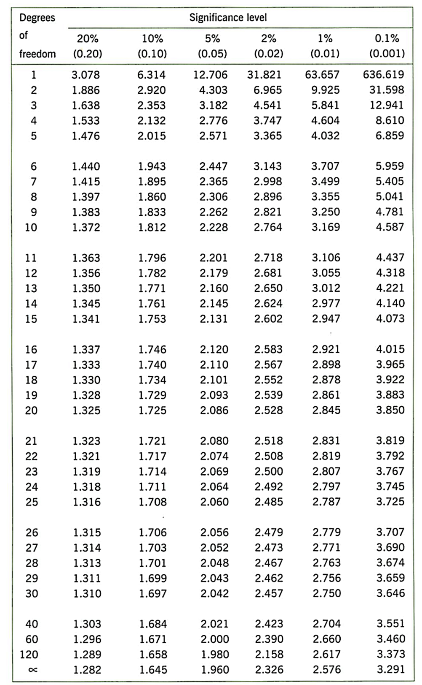

7 Week 7: One-sample t-test on salary estimates
Written by Tom Beesley & John Towse
Today we will look in a bit more detail at people’s estimates of the average UK salary. We will first plot this data using geom_histogram() and also geom_boxplot(). When we do this, we’ll see that there are some unusual values, and we’ll need to do a bit of data wrangling to remove them, using the filter() command. We’ll then turn to the conceptual ideas of the lecture - how can we tell if the mean of our sample is unusual, or whether we would actually expect this mean value under the null hypothesis? Finally, we’ll continue to develop our skills in data visualisation by exploring geom_density() plots.
7.1 Pre-lab work: online tutorial
Online tutorial: You must make every attempt to complete this before the lab! To access the pre-lab tutorial click here (on campus, or VPN required)
Getting ready for the lab class
Create a folder and a Project for Week 7. Click here for the instructions from last week if you are unsure.
Download the Week_7.zip and upload it into this new folder in RStudio Server. If you need them, here are the instructions from Week 2.
7.2 RStudio Task 1: Plotting and filtering
Important! - You should be using the Week_7_script as you work through these tasks. Edit the script to complete the tasks. Running code from the script is easy - place your cursor on the line or block of code you want to run and press “run” (of ctrl/cmd+enter). See the video on Moodle if you’re unsure. Save your script as you go to keep a record of your work.
Open the Week_7_script and run the
library,optionsandread_csvcommands. Theoptionscommand is new. It is very cryptic and you don’t need to worry too much about this - it is making sure that the values in the graphs are displayed as regular numbers and not as scientific notation.Complete the
geom_histogram()code to plot the distribution of salary dataOK - we’ve got some pretty funky values here! Some people think the average salary is over £300,000!!! Well, maybe they just added too many zeros (let’s give them the benefit of the doubt). Quite often when we get our “raw” data, it contains weird values like this that we need to consider removing. Let’s run the
arrange()code now to see what exactly those high values are.We’ll need to remove these high values to get a better sense of the distribution. Let’s use a
filter()command to do this. We need to make a decision about what values to exclude. In later labs we’ll look at a more systematic process of removing outliers, but for now, let’s just remove any that are over £200,000. Edit thefilter()command to keep only those estimates that are below £200,000 (<). Remeber that the filter command keeps the data that is TRUE according to the expression. Also note that you are making a new object at this step: data_w7_f .Now your filter has done its job (check the Environment to make sure data_w7_f has fewer rows than data_w7), let’s plot the data again. Edit the
aes()command of this next code chunk to draw a new histogram.And as you know, we can also look at the distribution as a boxplot. Edit the
geom_boxplot()code to do this.
7.3 RStudio Task 2: One-sample t-test
We now want to know if the salary estimates are different to the actual average salary in the UK (which is approx. £30,000). Our hypothesis might be that people are inaccurate - they overestimate or underestimate the average UK salary. Let’s test that.
The first step towards this is to calculate a mean of the column of salary estimates. Edit the line of code with
mean()to tell R to compute this value. Remember to use the new data object you created after you removed the outliers. If you’re struggling to remember how to compute amean(), jump back to the Week 2 contentNow we can compute a t-statistic and check its significance with
t.test(). Edit the code on this line to conduct a one-sample t-test. You need to provide the sample of data on which you want to conduct the test, and the expected mean under the null hypothesis. Remember our hypothesis is that people are not accurate. Your calculation of the mean should tell you whether they numerically overestimated or underestimated. But would we expect such a result under the null hypothesis? Run the t-test and note the p value. How likely is it that we would see this sample of data (this mean value and the distribution of data - the SD) under null hypothesis? The p value ranges from 0 to 1. If it is very low - typically we say p < .05 - then we conclude our result is unlikely under the null hypothesis and it is therefore a significant result.What is the critical value of t in the t-distribution table, for this sample size? Degrees of freedom is N - 1.

7.4 RStudio Task 3: Density plots: salary estimates by home location
Draw a
geom_density()(density plot) by adding an x mapping for the uk_salary column insideaes(). This plot can be thought of as a smoothed version of the histogram.Now map the fill feature to the variable home_location. This should create 3 density plots, one for each home location. You might find that it’s a bit difficult to see the shape of all three distributions. To make things clearer, add
alpha = .5outside of theaes()command ingeom_denisty(). This should make the plots a bit more transparent. Try playing around with different values of alpha between 0 and 1.Manually change the colours of the columns by adding (+) this code as a layer to your ggplot code:
scale_fill_manual(values = c("darkgreen", "darkblue", "darkred")). Take a look at this PDF for more colour options than you’ll probably ever want!You can save your graph outside of R by clicking Export -> Save as Image.